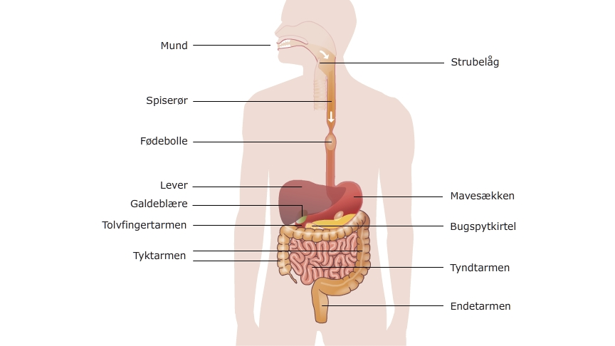
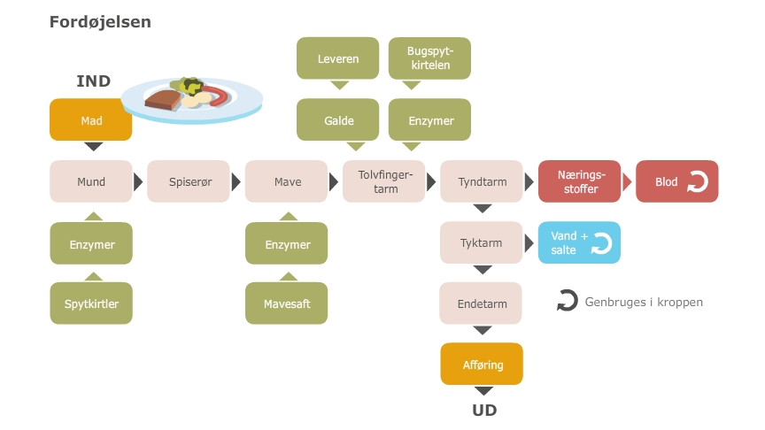

Vi spiser for at få energi til at kunne bevæge os, holde kropsvarmen på 37 grader og til at tænke.
Der er et ordsprog der siger ”Du er hvad du spiser” og det passer egentlig meget godt. Dengang du blev født vejede du ca. 3,5 Kg og nu vejer du måske et sted mellem 50 og 90 Kg, hvor er alle de kilo menneske kommet fra, ja der er kun et sted, fra den mad du har spist.
Maden indeholder også den energi du skal bruge for at kunne bevæge dig, for at kunne holde din kropstemperatur på 37 grader og for at få energi til at hjernen kan tænke.
Dit fordøjelsessystem hiver alle de næringsstoffer og dermed energien ud af den mad du spiser. Fra det øjeblik du spiser en bid mad, nedbryder fordøjelsessystemet maden og kommer alle de næringsstoffer du skal bruge over i blodet, hvorved de kan komme rundt i hele kroppen.
Se billedet nedenfor - et samlet billede af kroppens fordøjelsesfunktioner.
Alt det der bliver tilbage efter at fordøjelsessystemet har hevet næringsstofferne over i blodet, forlader kroppen igen som afføring.
Se billedet nedenfor - skema over kroppens fordøjelse.
Vi spiser for at få energi og stoffer til at bygge kroppen af. Fordøjelsessystemet nedbryder maden til næringsstofferne kulhydrat, fedt og protein. Fordøjelsessystemet fører via tyndtarmen alle de nedbrudte næringsstoffer over i blodet, så de kan komme rundt og blive brugt af kroppens celler.